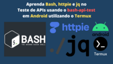
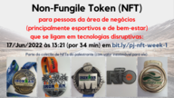
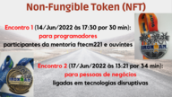
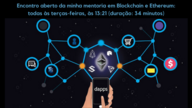

Hi! Many of my blog posts are written in Portuguese in a non technical language and for Brazilians (pt-br). Some of them are in English (en) and high technical to normal people (non programmers).
pt-br, 2022-12-06
 O Bash se torna super poderoso para testes de APIs quando aliado a ferramentas como curl, httpie e jq. Ao escrever código com essa stack, você verá que ele é sucinto e eficiente para trabalhar com requisições e respostas na chamada a APIs. Conheça o bash-api-test, um framework que te ajudará nisso.
pt-br, 2022-07-27
Um exemplo sobre confiança: você confia na empresa para a qual trabalha. O cliente da sua empresa confia nela pois, caso contrário, não a contrataria. É assim que sempre funcionou e que sempre funcionará.
pt-br, 2022-06-17
 Esses são alguns dos links que apresentam conteúdo que eu leio ou guardo, para explicar as pessoas, o que são NFTs, os marketplaces onde eles podem ser negociados, e vários dos projetos que tem feito uso deles.
pt-br, 2022-06-14
 Farei dois encontros sobre Non-Fungible Token (NFT), nessa semana, com dois públicos diferentes:
pt-br, 2022-06-10
Como programador, desde que abri minha primeira empresa de software em 1995, eu sempre gostei de ter meu próprio espaço de trabalho. Nele eu passo várias horas do meu dia. Eu invisto, bastante, nesse meu ambiente.
pt-br, 2022-05-26
Há exatos nove anos, no dia 26 de Maio de 2013, pela primeira vez eu escutei o grito, com toda a entonação merecida, que muitos que se prepararam, durante um ano ou mais de treinamento, irão escutar neste próximo domingo, dia 29 de Maio de 2022.
pt-br, 2022-05-25
 Bem, agora vou ao ponto que pode interessar a todos que estão lendo esse texto: na minha mentoria, o encontro online é sempre às terças-feiras, às 13 horas e 21 minutos, e dura 34 minutos.